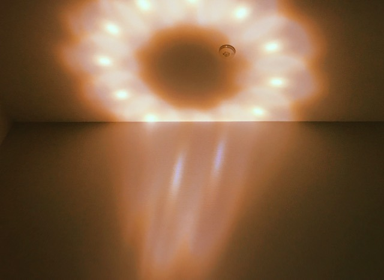
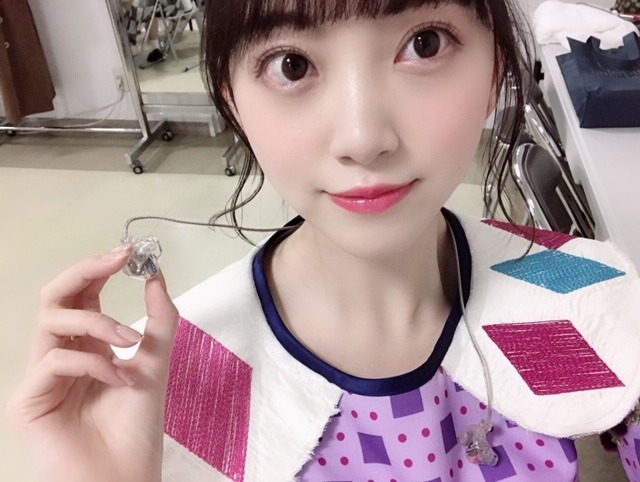

2019/0301Friビタミンとらなきゃね
バスラについてのブログは次回あげます
今書いてるのでお待ちを〜
昨日、おとといと2日続けて寝る前に
はっさくを食べています
だから何ってわけではないです
ただの報告です
風邪をひいていたのでお母さんがむいてくれて
それをひたすらムシャムシャ食べていました(^-^)
伊予柑とかはっさくとか金柑とか柑橘類は、
風邪で食欲のない日に特に食べたくなります...

メロンもいちごもスイカもみかんも好きだけど
桃は毎日食べたいくらい好きだなぁ
早く桃がたくさんたべられる夏にならないかな？

水晶の乗ったオルゴール

天井に照らされて
マーガレットみたいな花が綺麗に咲いていました
暗すぎず明るすぎないこの灯された
ひっそりとした空間が心地よい日だってあるし
太陽に思いっきり当たりたい日だってあるし
人間の気分って本当に色々だなって。
毎日同じことの繰り返しじゃつまらないですよね
バスラ終わりにすぐ体調を崩してからは
最近はお家にいる時間が多いです
免疫力を高めて体を丈夫にして
2019年もだいすきなお仕事にたくさん取り組みたいです！もう元気になってきたので安心してね！！
わ〜〜〜
元気だぞぉ〜〜〜
ヨーグルト食べるぞぉ〜
最近は、Netflixでゴシップガールを見返してます
私はブレア派✨おしゃれで可愛くてわがまま気分屋お姫様だけど素直で憎めなくてすき

では
2019/03/01 19:36
コメント(451)
こんばんは。
お元気そうで何より。
はっさくは今の時期が旬なんですね。うちの近所のスーパーは伊予柑が並んでるので自分も真似してビタミン摂取しますね(^3^)/
お元気そうで何より。
はっさくは今の時期が旬なんですね。うちの近所のスーパーは伊予柑が並んでるので自分も真似してビタミン摂取しますね(^3^)/
はい、好き。可愛い。
九州にはいろんな柑橘類があるあるけど宮崎の『日向夏』も食べてみてね。内皮の薄皮が美味さを引き立てる変な柑橘類です。
ゆっくり休んで、また歩いていこう。
ゆっくり休んで、また歩いていこう。
未央奈ブログ更新ありがとう
体調が心配だよーー
元気になってて安心した☺
コメント長くなるだけだから、まとめるよー
君が好きだ。
backnumberさんの歌詞（笑）
体調が心配だよーー
元気になってて安心した☺
コメント長くなるだけだから、まとめるよー
君が好きだ。
backnumberさんの歌詞（笑）
未央奈の風邪が早く治りますように！
お大事にしてください！
免疫力を高めるにはビタミンCとグルタミンの摂取が大事ですよ〜
お大事にしてください！
免疫力を高めるにはビタミンCとグルタミンの摂取が大事ですよ〜
ブログ更新ありがとう
体調は大丈夫？？？
ゆっくり治してね(^^)
体調は大丈夫？？？
ゆっくり治してね(^^)
三宝柑も美味しいので是非食べてみてください♪
blog更新(*´▽`人)ｱﾘｶﾞﾄｳ♡
レコメンで体調崩してお休みしたと聴いて心配してました。
だいぶ良くなったみたいで安心です。
栄養睡眠しっかり取って下さいね。
レコメンで体調崩してお休みしたと聴いて心配してました。
だいぶ良くなったみたいで安心です。
栄養睡眠しっかり取って下さいね。
柑橘類やフルーツ、ヨーグルトを食べて
早く元気未央奈ちゃんに戻って
欲しいね⁉︎(^^)
フルーツ大好き堀未央奈ちゃん
ブログ更新ありがとう⁉︎
段々と体調が良くなってきたのかな？
しばらくモバメが無かったから
仕事かな？と思っていたら
体調崩していたと聞いた時は
びっくりしました。
来週のレコメンは未央奈ちゃんの
声が聞けるかな？
レコメンプリン会コンビが頑張って
いたよ〜〜⁉︎
絢音ちゃんはかなりハイテンション
だったしね⁉︎
あっそのイチゴあ〜〜んして
下さい⁉︎
早く元気未央奈ちゃんに戻って
欲しいね⁉︎(^^)
フルーツ大好き堀未央奈ちゃん
ブログ更新ありがとう⁉︎
段々と体調が良くなってきたのかな？
しばらくモバメが無かったから
仕事かな？と思っていたら
体調崩していたと聞いた時は
びっくりしました。
来週のレコメンは未央奈ちゃんの
声が聞けるかな？
レコメンプリン会コンビが頑張って
いたよ〜〜⁉︎
絢音ちゃんはかなりハイテンション
だったしね⁉︎
あっそのイチゴあ〜〜んして
下さい⁉︎
バスラお疲れ様！！！ゆっくり休んでね！
堀ちゃーん！ブログ更新ありがとう！！
バスラお疲れ様でしたー！！！
レコメンお休みって聞いて、大丈夫かなあ。。って思ってたけど、治ってきてるようで一安心です！
寒い日が続くので、治ったあとも体調気をつけてね！
来週のレコメン楽しみにしてます！
バスラお疲れ様でしたー！！！
レコメンお休みって聞いて、大丈夫かなあ。。って思ってたけど、治ってきてるようで一安心です！
寒い日が続くので、治ったあとも体調気をつけてね！
来週のレコメン楽しみにしてます！
未央奈さんこんばんは！
体調大丈夫ですか？
柑橘系食べて、元気だしてくださいね(๑>ᴗ<๑)
僕はオルゴールがひまわりのようにも見えます( ´罒` )
これからも未央奈さん！
お仕事これからも頑張ってくだいさい！
でも無理だけはしないでくださいね ( ¨̮ )
じゃら～ん じゃら～ん٩(*´꒳`*)۶
体調大丈夫ですか？
柑橘系食べて、元気だしてくださいね(๑>ᴗ<๑)
僕はオルゴールがひまわりのようにも見えます( ´罒` )
これからも未央奈さん！
お仕事これからも頑張ってくだいさい！
でも無理だけはしないでくださいね ( ¨̮ )
じゃら～ん じゃら～ん٩(*´꒳`*)۶
未央ちゃん、ブログありがとう
Birthday liveお疲れさまでした(^^)
岐阜からじゃないんだけど、岐阜を通って大阪へ行きました
新幹線も、東京行くより、かなり安いね‥
４日目は、ライブビューイングでしたけど、4日間、楽しかったです
Birthday liveお疲れさまでした(^^)
岐阜からじゃないんだけど、岐阜を通って大阪へ行きました
新幹線も、東京行くより、かなり安いね‥
４日目は、ライブビューイングでしたけど、4日間、楽しかったです
チャァオ～～!☆彡
みおなちゃん、こんにちは～～⤴️⤴️⤴️❕❤️❤️❤️❤️❤️笑顔
はっさくかぁ～～⤴️⤴️❕❔❤️❤️❤️❤️❤️笑顔
いいねぇ～～⤴️⤴️⤴️❕❤️❤️❤️❤️❤️笑顔
おいら前住んでた所の家は、子供の頃から庭に夏みかんの木やはっさくの木があってぇ～～・・
ミカンが実ると、たくさんとって皮を使ったお菓子を作っていたよぉ❕❤️❤️❤️❤️❤️
皮を灰汁抜きする為に茹でてそのお湯を捨て
その後もう１回茹でて、砂糖をたくさん加えて水分が無くなるまで煮込んで
ミカンの皮の砂糖菓子を毎年何回か作っていたよぉ～～～⤴️⤴️❕❤️❤️❤️❤️❤️笑顔
熱い紅茶のおともにあうこと、あうこと❕❤️❤️❤️❤️❤️笑顔
今は引っ越したから～～⤴️⤴️、ゆずの皮の砂糖菓子やレモンの皮の砂糖菓子を良く買うよぉ～～～⤴️⤴️❕❤️❤️❤️❤️❤️笑顔
あぁ、たまに夏みかんの皮の砂糖菓子がお店に置いてある時は大人買いします❕❤️❤️❤️❤️❤️笑顔
・・って、なんでこんな話しをするかってぇ～～❕❔・・・・
それは、そのうちお話し致します❕❤️❤️❤️❤️❤️笑顔
それでは、みおなちゃんまたねぇ❕❤️❤️❤️❤️❤️笑顔
バイバイ❕❤️❤️❤️❤️❤️笑顔
(*^▽^)/★*☆♪❤️❤️❤️❤️❤️
☆大人しい、おすまし！より☆彡
季節の変わり目は体調崩しやすいよねー！
それにしても可愛い
元気もらいました
それにしても可愛い
元気もらいました
乃木坂はお仕事大変だろうけど、全然若いんだから健康には気をつけてねw
中の人monsterばっか飲んでるけどそうゆう人間にならないように笑
健康に健康に笑
中の人monsterばっか飲んでるけどそうゆう人間にならないように笑
健康に健康に笑
ブログ更新ありがとうございます。バスラお疲れ様です。
堀様軍団最高でした。またやってほしいです。応援してます。
堀様軍団最高でした。またやってほしいです。応援してます。
こんばんは
体調大丈夫？無理しないようにね！
風邪ひいた時ってほんと柑橘類食べたくなるよね。
栄養しっかりとってゆっくり休んでね。
体調大丈夫？無理しないようにね！
風邪ひいた時ってほんと柑橘類食べたくなるよね。
栄養しっかりとってゆっくり休んでね。
堀ちゃんが出演しているレコメンは毎週のオアシス。
体調が良くなってきてよかった。よかった。バスラ大変そうだったからね。
体調が良くなってきてよかった。よかった。バスラ大変そうだったからね。
好き
未央奈〜
ブログありがとう!!
7thのバスラお疲れ様!!
4月の個握に行くからね!!
映画も楽しみです!!
ブログありがとう!!
7thのバスラお疲れ様!!
4月の個握に行くからね!!
映画も楽しみです!!
ブログ更新ありがとう！
改めてバスラ、卒コンお疲れ様
1日目と2日目参戦したよ〜
2日目未央奈が出てる曲いっぱい聞けて良かった！
体調に気を付けてお仕事頑張ってね！
改めてバスラ、卒コンお疲れ様
1日目と2日目参戦したよ〜
2日目未央奈が出てる曲いっぱい聞けて良かった！
体調に気を付けてお仕事頑張ってね！
とてもかわいいです❤️ これからもずっと応援してます！
バスラお疲れ様でした！ ゆっくり休んでください。
バスラお疲れ様でした！ ゆっくり休んでください。
黒パーカ着てるの好きです！
2枚目の写真ドーナツの穴に月を入れたのかと思ってました笑笑
全然違いましたね。
堀さんの雰囲気は綺麗なのだ！
ブログ更新ありがとうございます！
2枚目の写真ドーナツの穴に月を入れたのかと思ってました笑笑
全然違いましたね。
堀さんの雰囲気は綺麗なのだ！
ブログ更新ありがとうございます！
未央奈ちゃん、今日もお疲れ様です＞＜ゞ
あら～、体調を崩していたんだね～＞＜；
ありがたい事にお母様が看病して下さったそうで！
私が出来ていないのに言えたクチではありませんが、
子供に対する母親の愛情、いつまでも大切にしたいものですよね
ハッキリとした言葉は覚えていないけど、
どこかで聞いたフレーズを思い出したので、
未央奈ちゃんに伝えてみました(笑)
風邪で食欲がない時にミカンを食べたくなるという事は、
ビタミンを不足がちになっているのかな？
良く言われる風邪にはミカンなんてのもあながち間違いではないんだね
２と３枚目の写真、どこがどうでこういう部品なのか分からないけど
幻想的な写真だね～
何か吸い込まれそう＠＠；
良い時も悪い時もありのままの自分を受け入れる事が出来る未央奈ちゃん
羨ましい！自分もそうでありたい
そして、食欲が戻って来たみたいで良かった～
食べる意欲を取り戻したんだから、もう心配ないね＞＜ｂ
暖かくなってはいますが、朝晩と昼との寒暖差がまだあるので
体調に気をつけてお過ごし下さい＞＜ゞ
あら～、体調を崩していたんだね～＞＜；
ありがたい事にお母様が看病して下さったそうで！
私が出来ていないのに言えたクチではありませんが、
子供に対する母親の愛情、いつまでも大切にしたいものですよね
ハッキリとした言葉は覚えていないけど、
どこかで聞いたフレーズを思い出したので、
未央奈ちゃんに伝えてみました(笑)
風邪で食欲がない時にミカンを食べたくなるという事は、
ビタミンを不足がちになっているのかな？
良く言われる風邪にはミカンなんてのもあながち間違いではないんだね
２と３枚目の写真、どこがどうでこういう部品なのか分からないけど
幻想的な写真だね～
何か吸い込まれそう＠＠；
良い時も悪い時もありのままの自分を受け入れる事が出来る未央奈ちゃん
羨ましい！自分もそうでありたい
そして、食欲が戻って来たみたいで良かった～
食べる意欲を取り戻したんだから、もう心配ないね＞＜ｂ
暖かくなってはいますが、朝晩と昼との寒暖差がまだあるので
体調に気をつけてお過ごし下さい＞＜ゞ
お疲れ様＾＾
元気になってきたようでよかった！完治するまでゆっくりしてくださいm(_ _)m
アメトーーク楽しみにしてますよ～＾＾
元気になってきたようでよかった！完治するまでゆっくりしてくださいm(_ _)m
アメトーーク楽しみにしてますよ～＾＾
ゆっくり休んでください
お大事に
お大事に
未央奈ブログ更新ありがとう！
バスラのブログも楽しみにしてるね〜
バスラのブログも楽しみにしてるね〜
体調不良少しは良くなりましたか？
バスラお疲れ様。ゆっくり休んでください。
アルバム楽しみです。
が、個別握手は全部外れました
人気やばいね、嬉しいことだけど
バスラお疲れ様。ゆっくり休んでください。
アルバム楽しみです。
が、個別握手は全部外れました
人気やばいね、嬉しいことだけど
堀ちゃんブログ更新ありがとう！そして、バスラお疲れさまでした～！めちゃくちゃ良かったよ
体調大丈夫？早く元気になって明るい堀ちゃんが見たいです
「卒業ラッシュ(？)」が来てる中で色々と受け止めきれないことがあると思うけど堀ちゃんならそれをバネにして出来るはず。そう信じてます
今日も１日お疲れさまです
体調大丈夫？早く元気になって明るい堀ちゃんが見たいです
「卒業ラッシュ(？)」が来てる中で色々と受け止めきれないことがあると思うけど堀ちゃんならそれをバネにして出来るはず。そう信じてます
今日も１日お疲れさまです
ブログ更新ありがとう！
バスラお疲れ様！めっちゃ感動したよ！
家で観てたけど泣いちゃいました
それぞれ想いがある中で迫力のあるダンス
表現力のある歌全部に感動しました！！
未央奈ちゃんと握手会でまた話してみたいです
いつも笑ってる未央奈ちゃんに会いたいです
したっけ〜〜
どさんこしゅーちゃん
バスラお疲れ様！めっちゃ感動したよ！
家で観てたけど泣いちゃいました
それぞれ想いがある中で迫力のあるダンス
表現力のある歌全部に感動しました！！
未央奈ちゃんと握手会でまた話してみたいです
いつも笑ってる未央奈ちゃんに会いたいです
したっけ〜〜
どさんこしゅーちゃん
堀ちゃん！更新ありがとう！
体調、大丈夫そうでよかった～
安心しました！
ホントに今までの
疲れがバッーと出たんだね。
何でも全力の堀ちゃんに
毎回元気をもらってます！
ありがとう‼
家での休息は特に
大事よね～！ わかるわかる！
はっさくか～！すっぱ！とか言いながら
時々食べます！ 何かしらの
柑橘系は、家に常駐させてます！
ヨーグルトとオレンジは
一緒に食べると、吸収されにくいから
毎食、どちらか一個の方が
体にいいよ！ ぜひ、お試しを！
いっぱい食べて、ドラマ見て、
体調治す。堀ちゃんらしいといえば
堀ちゃんらしい治し方だね！
前のブログのコメントでも
書きましたが、手術が無事
終了して、退院できました！
堀ちゃんのおかげだよ‼
本当にいつも元気をありがとう‼
元気そうな写真見れて、
よかったです！
次回のバスラブログも
楽しみにしてるよ～！
それでは、引き続き
体調気をつけて、お互い
過ごしていきましょう‼
おやすみおな～！
体調、大丈夫そうでよかった～
安心しました！
ホントに今までの
疲れがバッーと出たんだね。
何でも全力の堀ちゃんに
毎回元気をもらってます！
ありがとう‼
家での休息は特に
大事よね～！ わかるわかる！
はっさくか～！すっぱ！とか言いながら
時々食べます！ 何かしらの
柑橘系は、家に常駐させてます！
ヨーグルトとオレンジは
一緒に食べると、吸収されにくいから
毎食、どちらか一個の方が
体にいいよ！ ぜひ、お試しを！
いっぱい食べて、ドラマ見て、
体調治す。堀ちゃんらしいといえば
堀ちゃんらしい治し方だね！
前のブログのコメントでも
書きましたが、手術が無事
終了して、退院できました！
堀ちゃんのおかげだよ‼
本当にいつも元気をありがとう‼
元気そうな写真見れて、
よかったです！
次回のバスラブログも
楽しみにしてるよ～！
それでは、引き続き
体調気をつけて、お互い
過ごしていきましょう‼
おやすみおな～！
急なんですけどザンビのみおなちゃんめちゃかわです！！♡
かわいすぎです。ほんっとにかわいい
はっさく美味しいですよね♪
お大事に！握手外れました…泣いてます(´°̥̥̥̥̥̥̥̥ω°̥̥̥̥̥̥̥̥｀)
自分も早く体調を良くして個握に行けるように頑張るよぉ～☆
未央奈にたくさんパワーをもらっているみおにゃんにゃんより。
未央奈にたくさんパワーをもらっているみおにゃんにゃんより。
お大事に(*ノ▽ノ)
柑橘類は食べだすと止まりませんよね。先日熊本の友人から、晩白柚（ばんぺいゆ）というびっくりするような大きさの八朔に似た果物をいただいたんですが、爽やかな香りと味でとても美味しかったです。未央奈は食べたことありますか？あと僕もヨーグルトは大好きで、最近は朝食はほぼ毎日グラノーラにヨーグルトをかけて食べてます。では家でゆっくりくつろいでいる未央奈を想像すると僕までほっこり安らぐ気がします。いつもありがとう‥
未央奈ちゃん、今日も一日お疲れさまです！
大丈夫ですか。
レコメンで体調を崩したことを
初めて知ってびっくりしました！
疲れがたまっていたのかな。
でも今日ブログを読んで
顔をみてちょっと安心しました！
また声をきかせてくださいね！！！
応援しています！！！
無理せずにね！！！
大丈夫ですか。
レコメンで体調を崩したことを
初めて知ってびっくりしました！
疲れがたまっていたのかな。
でも今日ブログを読んで
顔をみてちょっと安心しました！
また声をきかせてくださいね！！！
応援しています！！！
無理せずにね！！！
体調お大事にです！
果物アレルギー多くて食べられないものたくさんなんですが、柑橘系は食べられます！好きです！
バスラのブログ楽しみにしてますね〜^_^
果物アレルギー多くて食べられないものたくさんなんですが、柑橘系は食べられます！好きです！
バスラのブログ楽しみにしてますね〜^_^
ブログの更新ありがとう！
バスラ、とっても楽しかった！
一日目がアリーナだったんだけど、センターステージからメチャメチャ近い位置だったから本気でアピールしてたら、ありがとうって口パクでくれて、嬉しくてちょっと泣いてたよ！途中までいない演出だったから、体調崩しちゃった？ってとっても心配してた！
やっぱり一番危ないのは、緊張が解けたときだよね！普段忙しくて、体調崩しちゃったけど貴重な自由時間だと思うから、いっぱい楽しんでいるならいいなー
元気で可愛い未央奈を見てるときをゆっくりと待ってるね！
これからも応援しているよー
バスラ、とっても楽しかった！
一日目がアリーナだったんだけど、センターステージからメチャメチャ近い位置だったから本気でアピールしてたら、ありがとうって口パクでくれて、嬉しくてちょっと泣いてたよ！途中までいない演出だったから、体調崩しちゃった？ってとっても心配してた！
やっぱり一番危ないのは、緊張が解けたときだよね！普段忙しくて、体調崩しちゃったけど貴重な自由時間だと思うから、いっぱい楽しんでいるならいいなー
元気で可愛い未央奈を見てるときをゆっくりと待ってるね！
これからも応援しているよー
バスラお疲れ様です！
バレッタの衣装好きすぎて
伝えたいことはたくさんありますが一言で表すと
エモいです！、、笑
バレッタの衣装好きすぎて
伝えたいことはたくさんありますが一言で表すと
エモいです！、、笑
バスラが初大阪‼︎
みおちゃん可愛くてめちゃめちゃ癒されました(o^^o)
それより
体調大丈夫？？
好きなものいっぱい食べて元気になってくださーい
このブログ見たら明日のサッカー の試合頑張るぞー！！
の試合頑張るぞー！！
みおちゃん可愛くてめちゃめちゃ癒されました(o^^o)
それより
体調大丈夫？？
好きなものいっぱい食べて元気になってくださーい
このブログ見たら明日のサッカー
こんばんは。
愛しの堀さん、心配でしたよ。
回復傾向のようで、ホッとしました。
バースデーライブのブログは、心待ちではあるものの、今は回復に専念して下さいよ。
風邪での柑橘類は、必然的な欲求ですよね。
美味しいですね。
お母さんの愛も加算されて、より元気回復傾向ですね。
桃も食べたくなりますよね。
自分は、そんな時は缶詰でしたが美味しかったです。
しおらしさが心地良い時もありますよね。
そんな時は、身体が何かしらのSOSを発信してますね。
存分に癒されて下さいね。
春本番まであと僅か、完全復活と身体鍛錬も望みたいですね。
自分に合うヨーグルトを見つけ、毎日食べて免疫力高めて下さいね。
その日まで、待ってますよ。
大丈夫、自分には堀さんしか考えられないのですから。
頑張って行きましょう！
愛しの堀さん、心配でしたよ。
回復傾向のようで、ホッとしました。
バースデーライブのブログは、心待ちではあるものの、今は回復に専念して下さいよ。
風邪での柑橘類は、必然的な欲求ですよね。
美味しいですね。
お母さんの愛も加算されて、より元気回復傾向ですね。
桃も食べたくなりますよね。
自分は、そんな時は缶詰でしたが美味しかったです。
しおらしさが心地良い時もありますよね。
そんな時は、身体が何かしらのSOSを発信してますね。
存分に癒されて下さいね。
春本番まであと僅か、完全復活と身体鍛錬も望みたいですね。
自分に合うヨーグルトを見つけ、毎日食べて免疫力高めて下さいね。
その日まで、待ってますよ。
大丈夫、自分には堀さんしか考えられないのですから。
頑張って行きましょう！
バスラお疲れ様なので～す！
風邪 引いてたのですか！
びっくりしてます！
体調に気を付けてね！
元気が一番ですからね！
めっちゃ心配しますからね！
んじゃね～～ ゆっくり休んでね！
風邪 引いてたのですか！
びっくりしてます！
体調に気を付けてね！
元気が一番ですからね！
めっちゃ心配しますからね！
んじゃね～～ ゆっくり休んでね！
ブログ更新ありがと〜(o^^o)
バスラ本当にお疲れ様〜
今回は忙しくて行けなかったけど、遠くからずっと
応援してました(*^^*)
自分も岐阜県出身なので、家族皆で応援してます。
これからも頑張ってね！
今まで忙しかったけど、個握始めて行けることになったよ。
今からすごく楽しみです！
でわ、またコメントしますっ
お体に気をつけてね。
バスラ本当にお疲れ様〜
今回は忙しくて行けなかったけど、遠くからずっと
応援してました(*^^*)
自分も岐阜県出身なので、家族皆で応援してます。
これからも頑張ってね！
今まで忙しかったけど、個握始めて行けることになったよ。
今からすごく楽しみです！
でわ、またコメントしますっ
お体に気をつけてね。
無理しないでゆっくり休んでください
こんばんは。ブログ更新ありがとうございます。
バスラお疲れ様でしたー。体力使い切ったようですね。風邪？熱？ビタミンCもたくさん取ってるようなので、ゆっくり休んでくださいね。私は体調が悪い時はリポDやエスカップなどの栄養ドリンクを飲んでいます。お勧めですよー。
ではまた。
バスラお疲れ様でしたー。体力使い切ったようですね。風邪？熱？ビタミンCもたくさん取ってるようなので、ゆっくり休んでくださいね。私は体調が悪い時はリポDやエスカップなどの栄養ドリンクを飲んでいます。お勧めですよー。
ではまた。


これから、少しでもゆっくり休んでください。
真夏の全国ツアー楽しみにしてます‼️